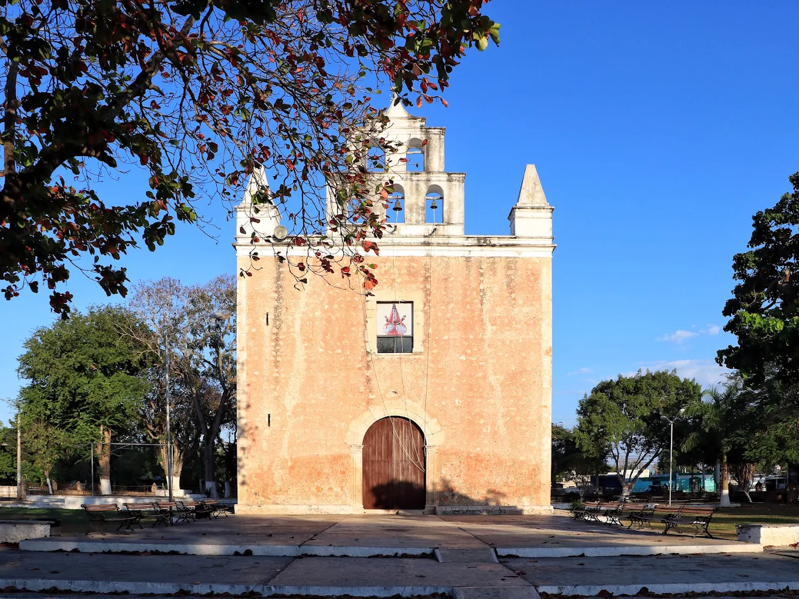
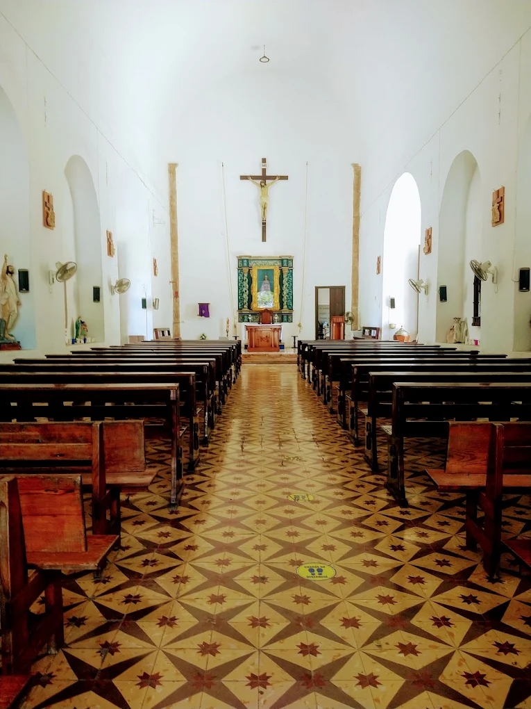

Nuestra Parroquia

Fachada Principal
Puertas abiertas para recibir a toda la comunidad.

Nave Central
Un espacio sagrado para el encuentro y el recogimiento.
Contacto y Atención Parroquial
Información importante del despacho y medios de comunicación
📞 Teléfono
📘 Facebook Oficial
Parroquia Nuestra Señora de Belen Caucel Pueblo
✉️ Correo Electrónico
🕒 Horario de Oficina
Mar a Sáb: 9:00 AM - 1:00 PM y 5:00 PM - 8:00 PM
Domingos: 9:00 AM - 11:50 AM
⚠️ Importante: Los días lunes la iglesia permanece cerrada y el personal descansa.
Horarios Principales
Misas Diarias
- Martes: 7:00 PM
- Jueves: 7:30 PM
- Viernes: 7:00 PM
- Sábados: Horarios varían
Misas Dominicales
- Mañana: 7:00 AM, 10:30 AM, 12:00 PM
- Tarde: 7:30 PM